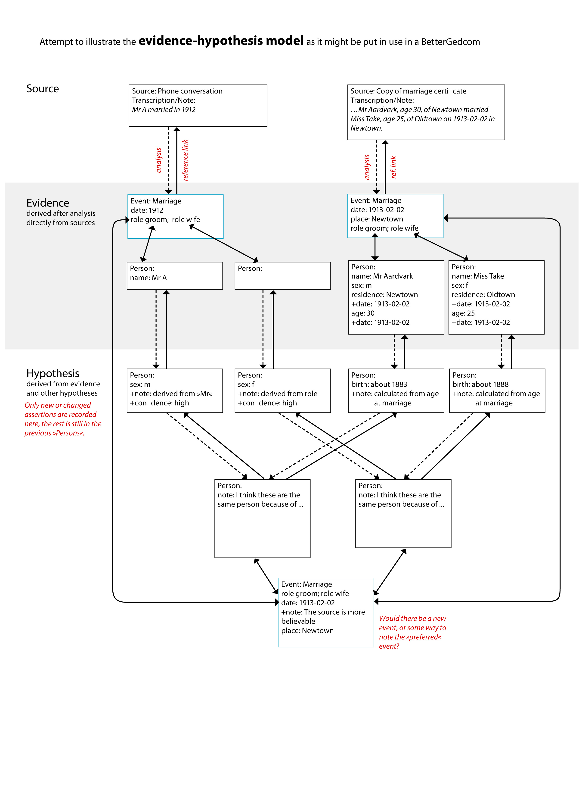

Submitted by testuser42 in this thread: message/view/evidence+vs.+conclusions/30847149 (please read, if interested)
Also available as
PDF
Notes:
- I used "hypothesis" since someone said "conclusion" is too final. But "conclusion" seems to be more common.
- The first row of "hypothesis persons" should be included in the "evidence persons", since they are very basic deductions. Tom's "vitals" are perfect for this information.
- The analysis or reasoning for the hypotheses should probably be more than just a standard "note".
I would love to see a (little) more complex example in a pseudo-BG (or DeadEnds or GEDCOM) format, so I could try to diagram that. What will happen when a few more sources and evidence lead to additional information and events? Will new conclusion persons need new conclusion events?
I also ideally would want to have a way to keep a record of the person who entered/edited data, and a timestamp for the edit. So that if I first trust a certain researcher's opinion I could still change that easily later.
Regarding who entered the data, that is the function of the researcher sort of information that would be attached to the overall database. Timestamps are also something we'll need to add.I think there are several little things like this that we'll need to add onto any model. However, we still don't have basic issues solved, so this hasn't been anything I've focused on.
We've got to load up that data somehow, yes. See http://bettergedcom.wikispaces.com/Shortcomings+Of+GEDCOM and its discussion page for my initial stab at a simple advance. If anyone thinks my categories are wrong - please discuss!